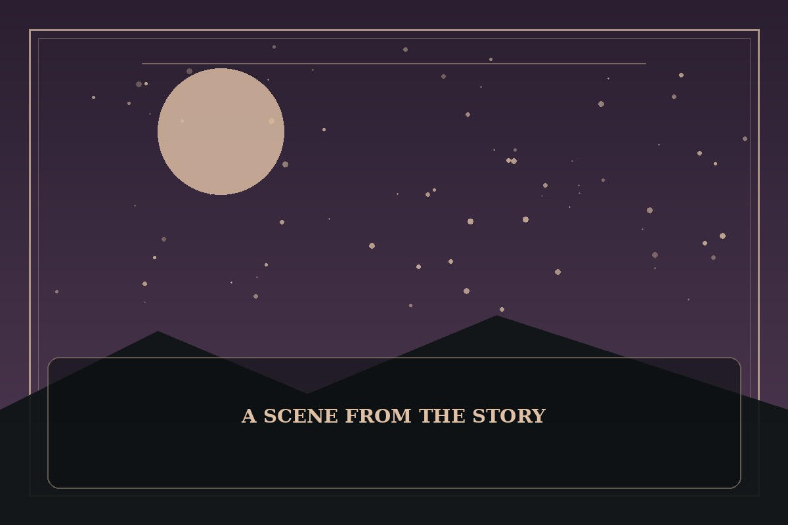

Return of the Mount Hua Sect
Synopsis
A martial artist wakes in a changed era and finds his once-proud school struggling to survive. Training, stubborn humor, and unexpected teamwork may restore its spirit before its name disappears.
Chapter 1: The Worst Tea in the Mountains
The tea tasted like boiled rope, and the training hall roof leaked directly onto the only dry table. Hwan stared at the school ledger and announced that their financial situation was so poor they could not afford to be embarrassed anymore.
He marched the disciples through dawn drills, then sent them to sell repaired furniture in the market. Their first customer complained about the uneven legs; their second recognized the school crest and asked whether the old stories were true. The disciples began telling increasingly ridiculous versions of their history.
By sunset, the school had earned enough for rice and roof tiles. Hwan called it a strategic victory, though everyone knew the real achievement was that the disciples had worked together without arguing for almost an hour. The mountain echoed with laughter instead of the sound of an empty hall.

This fan-made sample is an original piece created for a student website project; it is not an official chapter of Return of the Mount Hua Sect.